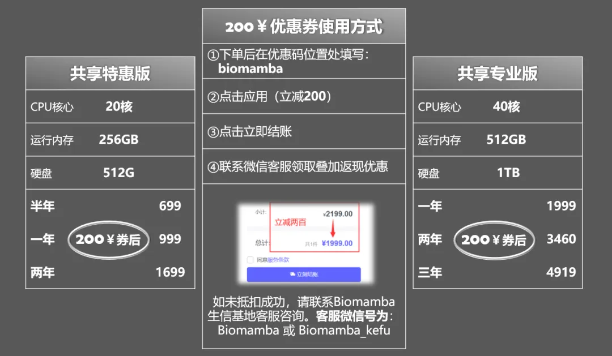
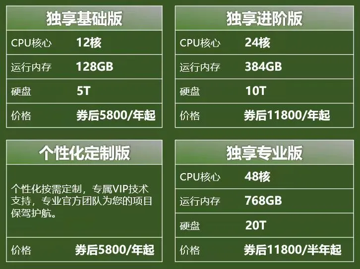
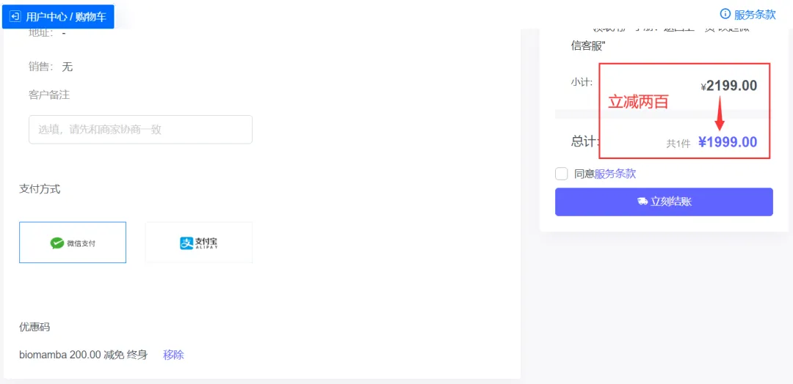

拍断大腿(T^T)
原文：https://mp.weixin.qq.com/s?__biz=MzAwMzIzOTk5OQ==&mid=2247522139&idx=1&sn=935b71b31a35b0ce85583fdc3dbacfdb&chksm=9b3cee0bac4b671d0e13c16be09c4ddfacc4b2321c39927ea4b1ef0e5c10d1b0b8cee2f73ac4#rd 合集：服务器
用户亲身经历，前两年版本更新涨过一波价，现在的服务器不仅拥有root权限 ，还有最大线程 、最大内存的 可使用权限(计算环境相对独立，用户不用在一台机器里抢内存抢线程啦)。而且下单的年限越高 ，折扣率 会越高: 两年3460/(原价1999￥*2)=87%折，三年4919￥/(1999￥*3)=82%折(还可以联系客服[Biomamba_kefu]生成五年订单)。
生信人绕不过一台服务器
一、升级配置、升级时长
公众号内的粉丝大都是研究单细胞测序的，现在动辄就百万细胞的数据集，拿自己的8G内存笔记本显然配置够不上需求。以下为各档位服务器的配置，起步256GB 、20线程 的配置足够为你的大数据集保驾护航。可以看出我们也相比此前推出了时长更长，优惠力度更大的套餐，年限越长 、性价比最高(最多可以一次性购买五年，打骨折)。

****● ****真的≈独享，机器中当前账号中没有计算任务时配置全空，无需与他人共享计算资源：

我们也有纯独享 的机器可以提供：

**● **当然，记得合理分配计算资源，并不是调用的资源越多计算速度就越快：调用的线程越多就算的越快嘛?
二、预装Rstudio-server
做生信分析难免会遇到环境配置和软件安装的问题，自己一个个去搜软件安装办法和依赖环境效率过低，而作为专业的生信服务器，西柚云的生信技术人员已经在服务器中预装了上千款生信软件/R包:


三、不用关机
这点我想大家深有体会，很多软件或函数任务运行时可能会花费数天时间，在本地电脑运行期间若自己的电脑若遇到断电、断网等问题，运行中的任务则会付之一炬。而服务器在机房稳定运行、永不关机，在服务器中执行任务时，无论是挂载在Linux 还是用Rstudio-server 运行，即使本地的电脑掉线或关机，服务器依然可以继续执行任务，完全不用守着自己的电脑。大家把自己的任务提交到后台运行即可：程序可以自己跑的，不用盯着
四、网速快
相较于大家的塑料校园网，服务器每台接入1000M的专线，且我们具有正规备案，即使访问境外的数据库依旧可以达到相同的速度，即使是使用最简单的wget 命令也能达到极高的下载速度，即使是用作一个网盘，似乎也比百度云更有优势。

五、性价比高
如上，一年服务器的费用差不多与一年的百度云会员、一个16GB内存条、1T的固态硬盘价格相当，但功能却多了许多 。与其花重金 升级自己的电脑，倒不如低价租用一台服务器，现在通过联名页面注册即送200￥优惠券 ，填写优惠码[biomamba]立减：“200元”粉丝福利使用方式。


另外，可咨询文末微信号领取返现福利(200￥粉丝专属优惠券与返现可叠加：“200元”粉丝福利使用方式)，注册链接：
https://biomamba.xiyoucloud.net/
六、损耗低
电脑的工作是有损耗的，相信大家在用自己的电脑计算时已经感受到机器的风扇在嗡嗡作响 ，倘若电脑不堪重负出现故障，随便换哪个零件 想来也比服务器的租金要高。
七、数据存储有保障
相较于传统的硬盘直储，服务器的存储方式为超融合集群存储，具体优点为高可靠性、高性能高可用，并且具有在线更换硬件、恢复数据的优势。这些优点我们之前专门花推送去说过(大家的宝贝数据怎么存储才最安全)。并且用户各自环境独立，数据私密性 保障拉到最高！
八、正经Linux系统
无论是windows下的子系统、双系统，还是虚拟机，与真正的Linux 环境还是有所区别。而服务器原汁原味的Linux可以帮助大家在真正的Linux环境中学习生信。没有Linux基础的小伙伴也不用担心，我们已经为大家准备好了系列教程：

优惠优惠优惠！
首先，我们这个服务器价格优势 很明显了，西柚云基本只需要1/4的价格就能买到4~5倍的配置，给大家看看某大厂的报价，64GB内存一个月就要两千了：

另外，新的3.0服务器把内存变成了完全的独享 ，每个用户都单独拥有全部的内存，CPU也变成了半独享 ，并且支持一键迁移系统至其它资源闲置节点，真真正正解决了共享服务器领域资源分配不均的情况）。并且还具有root权限 ，可以安装许多需要root的软件。总体配置比以前更空旷 ，以下是我的实时配置空余情况，没有程序运行时服务器基本处于空载状态 ：

具体配置的服务器每年的租用价格，需要购买的可以文末加客服微信先联系一下 ，目前谈下来最终的方案是标价-200￥，填写优惠码[biomamba]立减，且有额外返现（购买后加微信Biomamba返现）。注册购买链接：https://biomamba.xiyoucloud.net/(粘贴至浏览器打开，不要从微信中跳转)
为了大家学习体验需要，免费版依然在运行（128GB，可免费使用5 h，大家可以申请免费版或试用版学习我的教程十小时学会Linux ，有大量运算需求时再购买 ）。试用版也是可以访问Rstudio-server 的，这样大家就不用总在命令行里操作啦。连接教程可见：如何连接终端和Rstudio-server
避免装软件的烦恼： 大家自己的设备、R语言、Rstudio的版本与我有所出入，相当一部分同学运行我的代码时由于如上问题会遇到报错，综合这两个问题，初步有一个解决的办法——共享服务器。使用这个服务器，我们都可以在同样的环境下进行操作，每台服务器已经预先安装了我使用过的全部R包，直接加载即可，排除版本问题并拥有足够的配置。以后我们的课程都会在西柚云中进行录制。 ****这里放一个实际使用时的测试视频：
连接教程请参考：如何连接终端和Rstudio-server

如何联系我们

 公众号后台消息回复不便，这里给大家留一下领取资料及免费服务器(足够支持你完成硕博生涯的生信环境)的微信号 ，方便各位随时交流、提建议（别问在么，直接说来意）。此外呼声一直很高的交流群 也建好了，欢迎大家入群讨论：
公众号后台消息回复不便，这里给大家留一下领取资料及免费服务器(足够支持你完成硕博生涯的生信环境)的微信号 ，方便各位随时交流、提建议（别问在么，直接说来意）。此外呼声一直很高的交流群 也建好了，欢迎大家入群讨论：
大家可以阅读完这几篇之后添加给生信入门初学者的小贴士 如何搜索公众号过往发布内容

 您点的每个赞和在看，我都认真当成了喜欢
您点的每个赞和在看，我都认真当成了喜欢